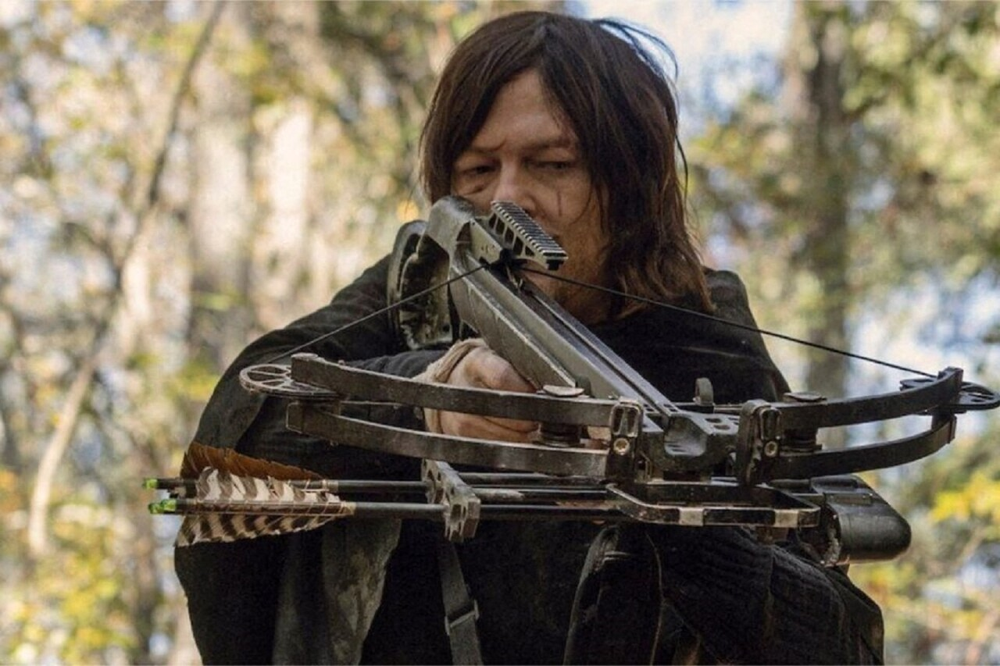
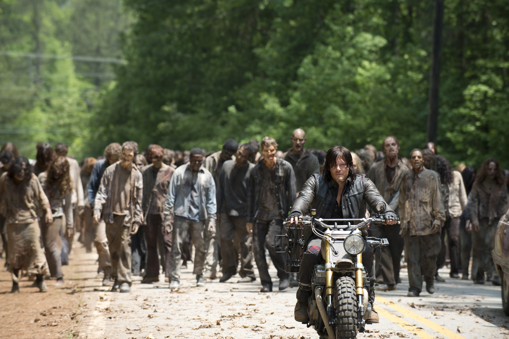

Ballesta
La ballesta de Daryl Dixon es un arma icónica. Esta arma es conocida por su eficacia y sigilo, lo que la convierte en una herramienta esencial para la supervivencia. Además, su habilidad para usar la ballesta con precisión y rapidez lo convierte en un combatiente formidable.

Motocicleta
La motocicleta de Daryl Dixon es una extensión de su personalidad rebelde. Es una herramienta de movilidad y escape, que le permite desplazarse rápidamente por el mundo post-apocalíptico.
